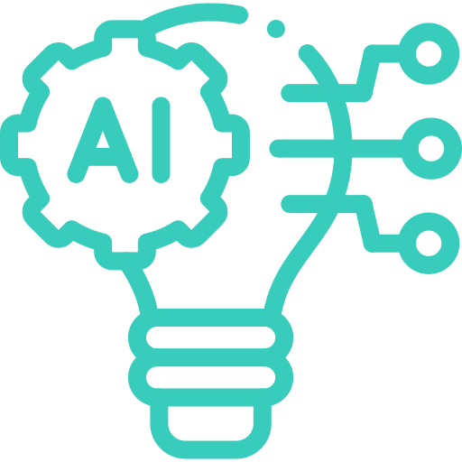

Machine Learning

Deep Learning
Symbolic Learning

Hybrid AI

Etica e Futuro
L'Intelligenza Artificiale rivoluziona il
lavoro, la creatività e la vita
quotidiana, migliorando efficienza, sicurezza e
innovazione in vari
settori, senza sostituire l’ingegno umano ma potenziandolo.
Strumenti come DALL·E e Midjourney permettono di generare immagini da descrizioni testuali.
AIVA aiutano i musicisti a comporre melodie basate su stili musicali predefiniti.
ChatGPT supporta la scrittura, offrendo idee e suggerimenti per superare il blocco dello scrittore e stimolare la creatività.
Grazie all’esperienze personalizzate su piattaforme come Netflix e Spotify, agli assistenti virtuali come Alexa e Siri, l'AI semplifica molte delle nostre attività quotidiane.
La Smart Home consente di controllare elettrodomestici e sistemi di sicurezza tramite comandi vocali o smartphone, migliorando comfort e efficienza.
Le auto intelligenti, monitorano il traffico e migliorano la sicurezza.
I chatbot per l’assistenza clienti operano 24/7, rispondendo rapidamente a domande frequenti e risolvendo problemi
comuni.
In ambito cybersicurezza, l’AI analizza il traffico online per rilevare minacce e proteggere dati sensibili.
Gioca anche un ruolo chiave nella lotta alla disinformazione, grazie ad algoritmi che verificano l’affidabilità delle fonti e analizzano contenuti sospetti.
Strumenti come IBM Watson Health analizzano enormi quantità di dati per supportare i medici nella scelta delle terapie.
I sistemi di computer vision aiutano a individuare anomalie nelle radiografie, mentre chatbot sanitari forniscono supporto ai pazienti.
L’IA è anche utilizzata nella ricerca farmacologica, accelerando la scoperta di nuovi farmaci.